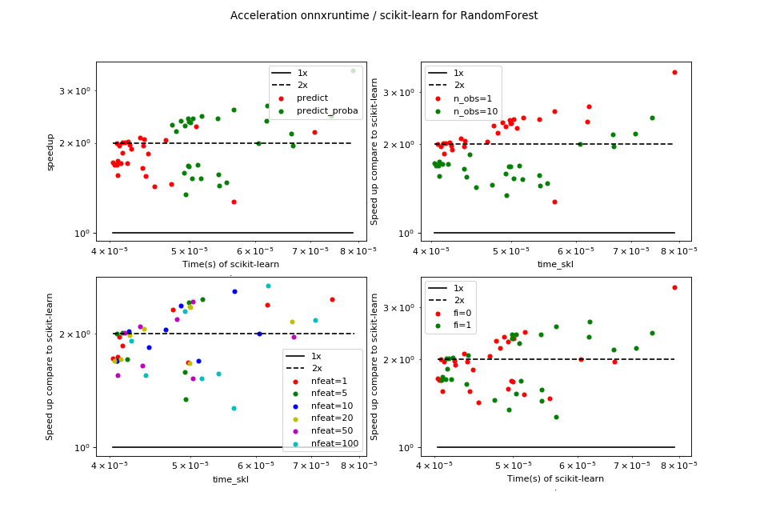

Prediction time scikit-learn / onnxruntime: logistic regression¶
Overview¶
(Source code, png, hires.png, pdf)
{kind=link}
{kind=link}

onnxruntime is always faster in that particular scenario.
Raw results¶
bench_plot_onnxruntime_logreg.csv
<<<
from pyquickhelper.pandashelper import df2rst
import pandas
name = os.path.join(
__WD__, "../../onnx/results/bench_plot_onnxruntime_logreg.csv")
df = pandas.read_csv(name)
df['speedup'] = df['time_skl'] / df['time_ort']
print(df2rst(df, number_format=4))
>>>
| fit_intercept | method | n_obs | nfeat | time_ort | time_skl | speedup |
|---|---|---|---|---|---|---|
| True | predict | 1 | 1 | 2.236e-05 | 4.147e-05 | 1.855 |
| True | predict_proba | 1 | 1 | 2.606e-05 | 6.19e-05 | 2.375 |
| True | predict | 10 | 1 | 2.353e-05 | 4.09e-05 | 1.738 |
| True | predict_proba | 10 | 1 | 3.012e-05 | 7.416e-05 | 2.462 |
| False | predict | 1 | 1 | 2.1e-05 | 4.109e-05 | 1.957 |
| False | predict_proba | 1 | 1 | 2.065e-05 | 4.764e-05 | 2.307 |
| False | predict | 10 | 1 | 2.351e-05 | 4.038e-05 | 1.717 |
| False | predict_proba | 10 | 1 | 2.959e-05 | 4.974e-05 | 1.681 |
| True | predict | 1 | 5 | 2.061e-05 | 4.139e-05 | 2.008 |
| True | predict_proba | 1 | 5 | 2.06e-05 | 4.982e-05 | 2.418 |
| True | predict | 10 | 5 | 2.458e-05 | 4.196e-05 | 1.707 |
| True | predict_proba | 10 | 5 | 3.682e-05 | 4.94e-05 | 1.341 |
| False | predict | 1 | 5 | 2.04e-05 | 4.075e-05 | 1.998 |
| False | predict_proba | 1 | 5 | 2.097e-05 | 5.17e-05 | 2.465 |
| False | predict | 10 | 5 | 2.407e-05 | 4.077e-05 | 1.694 |
| False | predict_proba | 10 | 5 | 3.111e-05 | 4.925e-05 | 1.583 |
| True | predict | 1 | 10 | 2.08e-05 | 4.213e-05 | 2.026 |
| True | predict_proba | 1 | 10 | 2.184e-05 | 5.65e-05 | 2.587 |
| True | predict | 10 | 10 | 2.41e-05 | 4.08e-05 | 1.693 |
| True | predict_proba | 10 | 10 | 3.024e-05 | 5.111e-05 | 1.69 |
| False | predict | 1 | 10 | 2.289e-05 | 4.675e-05 | 2.042 |
| False | predict_proba | 1 | 10 | 2.056e-05 | 4.877e-05 | 2.373 |
| False | predict | 10 | 10 | 2.425e-05 | 4.455e-05 | 1.837 |
| False | predict_proba | 10 | 10 | 3.036e-05 | 6.061e-05 | 1.996 |
| True | predict | 1 | 20 | 2.142e-05 | 4.399e-05 | 2.054 |
| True | predict_proba | 1 | 20 | 2.117e-05 | 4.988e-05 | 2.356 |
| True | predict | 10 | 20 | 2.416e-05 | 4.128e-05 | 1.708 |
| True | predict_proba | 10 | 20 | 3.086e-05 | 6.642e-05 | 2.152 |
| False | predict | 1 | 20 | 2.14e-05 | 4.229e-05 | 1.976 |
| False | predict_proba | 1 | 20 | 2.133e-05 | 5.005e-05 | 2.347 |
| False | predict | 10 | 20 | 2.396e-05 | 4.055e-05 | 1.692 |
| False | predict_proba | 10 | 20 | 2.983e-05 | 4.99e-05 | 1.672 |
| True | predict | 1 | 50 | 2.072e-05 | 4.169e-05 | 2.012 |
| True | predict_proba | 1 | 50 | 2.081e-05 | 5.041e-05 | 2.423 |
| True | predict | 10 | 50 | 2.66e-05 | 4.383e-05 | 1.648 |
| True | predict_proba | 10 | 50 | 3.307e-05 | 5.037e-05 | 1.523 |
| False | predict | 1 | 50 | 2.085e-05 | 4.349e-05 | 2.086 |
| False | predict_proba | 1 | 50 | 2.204e-05 | 4.815e-05 | 2.184 |
| False | predict | 10 | 50 | 2.634e-05 | 4.092e-05 | 1.553 |
| False | predict_proba | 10 | 50 | 3.4e-05 | 6.665e-05 | 1.96 |
| True | predict | 1 | 100 | 4.446e-05 | 5.647e-05 | 1.27 |
| True | predict_proba | 1 | 100 | 2.323e-05 | 6.213e-05 | 2.674 |
| True | predict | 10 | 100 | 3.254e-05 | 7.076e-05 | 2.175 |
| True | predict_proba | 10 | 100 | 3.449e-05 | 5.414e-05 | 1.569 |
| False | predict | 1 | 100 | 2.222e-05 | 4.244e-05 | 1.91 |
| False | predict_proba | 1 | 100 | 2.154e-05 | 4.93e-05 | 2.289 |
| False | predict | 10 | 100 | 2.853e-05 | 4.42e-05 | 1.549 |
| False | predict_proba | 10 | 100 | 3.394e-05 | 5.158e-05 | 1.52 |
| True | predict | 1 | 200 | 2.243e-05 | 5.084e-05 | 2.267 |
| True | predict_proba | 1 | 200 | 2.231e-05 | 5.406e-05 | 2.423 |
| True | predict | 10 | 200 | 3.27e-05 | 4.745e-05 | 1.451 |
| True | predict_proba | 10 | 200 | 3.766e-05 | 5.424e-05 | 1.44 |
| False | predict | 1 | 200 | 2.241e-05 | 4.388e-05 | 1.958 |
| False | predict_proba | 1 | 200 | 2.249e-05 | 7.888e-05 | 3.506 |
| False | predict | 10 | 200 | 3.179e-05 | 4.533e-05 | 1.426 |
| False | predict_proba | 10 | 200 | 3.763e-05 | 5.538e-05 | 1.472 |
{kind=link}
{kind=link}
Benchmark code¶
# coding: utf-8
"""
Benchmark of onnxruntime on LogisticRegression.
"""
# Authors: Xavier Dupré (benchmark)
# License: MIT
import matplotlib
matplotlib.use('Agg')
from io import BytesIO
from time import perf_counter as time
from itertools import combinations, chain
from itertools import combinations_with_replacement as combinations_w_r
import numpy as np
from numpy.random import rand
from numpy.testing import assert_almost_equal
import matplotlib.pyplot as plt
import pandas
from sklearn.linear_model import LogisticRegression
from skl2onnx import convert_sklearn
from skl2onnx.common.data_types import FloatTensorType
from onnxruntime import InferenceSession
##############################
# Implementations to benchmark.
##############################
def fcts_model(X, y, fit_intercept):
"LogisticRegression."
rf = LogisticRegression(fit_intercept=fit_intercept)
rf.fit(X, y)
initial_types = [('X', FloatTensorType([1, X.shape[1]]))]
onx = convert_sklearn(rf, initial_types=initial_types)
f = BytesIO()
f.write(onx.SerializeToString())
content = f.getvalue()
sess = InferenceSession(content)
outputs = [o.name for o in sess.get_outputs()]
def predict_skl_predict(X, model=rf):
return rf.predict(X)
def predict_skl_predict_proba(X, model=rf):
return rf.predict_proba(X)
def predict_onnxrt_predict(X, sess=sess):
return numpy.array(sess.run(outputs[:1], {'X': X.astype(np.float32)}))
def predict_onnxrt_predict_proba(X, sess=sess):
res = sess.run(outputs[1:], {'X': X.astype(np.float32)})[0]
# do not use DataFrame to convert the output into array,
# it takes too much time
out = numpy.empty((len(res), len(res[0])), dtype=numpy.float32)
for i, row in enumerate(res):
for k, v in row.items():
out[i, k] = v
return out
return {'predict': (predict_skl_predict,
predict_onnxrt_predict),
'predict_proba': (predict_skl_predict_proba,
predict_onnxrt_predict_proba)}
##############################
# Benchmarks
##############################
def allow_configuration(**kwargs):
return True
def bench(n_obs, n_features, fit_intercepts, methods,
repeat=10, verbose=False):
res = []
for nfeat in n_features:
ntrain = 100000
X_train = np.empty((ntrain, nfeat))
X_train[:, :] = rand(ntrain, nfeat)[:, :]
X_trainsum = X_train.sum(axis=1)
eps = rand(ntrain) - 0.5
X_trainsum_ = X_trainsum + eps
y_train = (X_trainsum_ >= X_trainsum).ravel().astype(int)
for fit_intercept in fit_intercepts:
fcts = fcts_model(X_train, y_train, fit_intercept)
for n in n_obs:
for method in methods:
fct1, fct2 = fcts[method]
if not allow_configuration(n=n, nfeat=nfeat, fit_intercept=fit_intercept):
continue
obs = dict(n_obs=n, nfeat=nfeat, fit_intercept=fit_intercept, method=method)
# creates different inputs to avoid caching in any ways
Xs = []
for r in range(repeat):
x = np.empty((n, nfeat))
x[:, :] = rand(n, nfeat)[:, :]
Xs.append(x)
# measures the baseline
st = time()
r = 0
for X in Xs:
p1 = fct1(X)
r += 1
if time() - st >= 1:
break # stops if longer than a second
end = time()
obs["time_skl"] = (end - st) / r
# measures the new implementation
st = time()
r2 = 0
for X in Xs:
p2 = fct2(X)
r2 += 1
if r2 >= r:
break
end = time()
obs["time_ort"] = (end - st) / r
res.append(obs)
if verbose and (len(res) % 1 == 0 or n >= 10000):
print("bench", len(res), ":", obs)
# checks that both produce the same outputs
if n <= 10000:
if len(p1.shape) == 1 and len(p2.shape) == 2:
p2 = p2.ravel()
assert_almost_equal(p1, p2, decimal=5)
return res
##############################
# Plots.
##############################
def plot_results(df, verbose=False):
nrows = max(len(set(df.fit_intercept)) * len(set(df.n_obs)), 2)
ncols = max(len(set(df.method)), 2)
fig, ax = plt.subplots(nrows, ncols,
figsize=(ncols * 4, nrows * 4))
pos = 0
row = 0
for n_obs in sorted(set(df.n_obs)):
for fit_intercept in sorted(set(df.fit_intercept)):
pos = 0
for method in sorted(set(df.method)):
a = ax[row, pos]
if row == ax.shape[0] - 1:
a.set_xlabel("N features", fontsize='x-small')
if pos == 0:
a.set_ylabel("Time (s) n_obs={}\nfit_intercept={}".format(n_obs, fit_intercept),
fontsize='x-small')
color = 'b'
subset = df[(df.method == method) & (df.n_obs == n_obs)
& (df.fit_intercept == fit_intercept)]
if subset.shape[0] == 0:
continue
subset = subset.sort_values("nfeat")
if verbose:
print(subset)
label = "skl"
subset.plot(x="nfeat", y="time_skl", label=label, ax=a,
logx=True, logy=True, c=color, style='--')
label = "ort"
subset.plot(x="nfeat", y="time_ort", label=label, ax=a,
logx=True, logy=True, c=color)
a.legend(loc=0, fontsize='x-small')
if row == 0:
a.set_title("method={}".format(method), fontsize='x-small')
pos += 1
row += 1
plt.suptitle("Benchmark for LogisticRegression sklearn/onnxruntime", fontsize=16)
def run_bench(repeat=100, verbose=False):
n_obs = [1, 10]
methods = ['predict', 'predict_proba']
n_features = [1, 5, 10, 20, 50, 100, 200]
fit_intercepts = [True, False]
start = time()
results = bench(n_obs, n_features, fit_intercepts, methods,
repeat=repeat, verbose=verbose)
end = time()
results_df = pandas.DataFrame(results)
print("Total time = %0.3f sec\n" % (end - start))
# plot the results
plot_results(results_df, verbose=verbose)
return results_df
if __name__ == '__main__':
from datetime import datetime
import sklearn
import numpy
import onnx
import onnxruntime
import skl2onnx
df = pandas.DataFrame([
{"name": "date", "version": str(datetime.now())},
{"name": "numpy", "version": numpy.__version__},
{"name": "scikit-learn", "version": sklearn.__version__},
{"name": "onnx", "version": onnx.__version__},
{"name": "onnxruntime", "version": onnxruntime.__version__},
{"name": "skl2onnx", "version": skl2onnx.__version__},
])
df.to_csv("bench_plot_onnxruntime_logreg.time.csv", index=False)
print(df)
df = run_bench(verbose=True)
plt.savefig("bench_plot_onnxruntime_logreg.png")
df.to_csv("bench_plot_onnxruntime_logreg.csv", index=False)
# plt.show()
Configuration¶
<<<
from pyquickhelper.pandashelper import df2rst
import pandas
name = os.path.join(
__WD__, "../../onnx/results/bench_plot_onnxruntime_logreg.time.csv")
df = pandas.read_csv(name)
print(df2rst(df, number_format=4))
>>>
| name | version |
|---|---|
| date | 2019-03-04 15:28:08.280097 |
| numpy | 1.16.2 |
| scikit-learn | 0.21.dev0 |
| onnx | 1.4.1 |
| onnxruntime | 0.2.2 |
| skl2onnx | 1.4.3 |